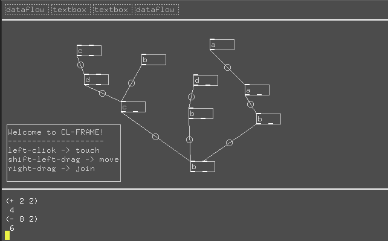

CL-FRAME: structured graphics for Lisp programs
Screenshot

Status
2006-10-28 — CL-FRAME now runs Snd and tells it to start the Snd-RT engine. I've got a few things to add to the interface to make testing this easier, and then I'll see if I can create some executable diagrams. But it's the weekend, so it might wait until Monday if I am lazy…
2006-10-27 — A bit slow today, but still productive. I finally wrapped my head around Snd-RT and got it making some noise. I've realized that CL-FRAME's notions of dataflows and ports will translate very naturally to Snd-RT's notions of <rt-play> instances and buses. I also got rid of the flicker in CL-FRAME's redrawing.
2006-10-20 — Spent some time today on refactoring and cleanups. I also implemented a general-purpose keybinding mechanism quite similar to that of Emacs, and a general-purpose text widget (similar to, but much much simpler than, that of Emacs.) More to come…
You can download cl-frame.lisp if you are curious, but right now it's barely usable.
What is CL-FRAME?
The truth is, I'm not entirely sure what is is yet. But here is an attempt to define it:
CL-FRAME is an alternative user interface framework for Lisp programs and the X Window System. It provides a notion of "workspaces" composed of pages called "worksheets", upon which are inscribed arbitrary visual programming elements, user interface widgets, and commentary.
The idea is that one constructs an application and its user interface by arranging and connecting these different pieces together, in some cases writing new widget subclasses in Common Lisp. Each worksheet can handle a task or a group of related tasks. Workspaces are saved in plain text files that may be shared and posted on the Web.
An application may either accomplish its work in Common Lisp, or by controlling external programs, or by some combination of the two methods.
The default interface is inspired by GNU Emacs. There is an interactive lisp listener where one may input commands, and a text editing feature with emacs-style default keybindings.
Soundframe
The first application for CL-FRAME (shown in the screenshot above) is called Soundframe, and implements subclasses for creating worksheets that perform realtime audio synthesis and processing with the Snd environment and its new realtime subsystem. This program is currently under construction and may also include Ecasound support at some point.
The goal is to create a comprehensive music creation interface that is suitable for non-programmer musicians. It is a platform for construction of tools for creating a whole album interactively, combining multiple techniques (jamming, recording, looping, layering, sampling, sequencing, stretching, processing, granulating) into an organic whole.
Some obsolete notes
These are some very early and obsolete notes on the project.
Inspiration
- We want emacs-style user interfaces for applications written in either Emacs Lisp or Common Lisp.
- We want arbitrary structured graphical elements in our buffers—something emacs does not support by itself.
- We want to make interactive structured graphics available for use in Emacs Lisp applications, and make it look like this is happening inside an ordinary emacs frame.
- We want to make Emacs' text editing facilities available for use in Common Lisp applications.
A sketch of the solution
- Implement a graphical Common Lisp "shell" that allows one to open Emacs-style "frames" that can support arbitrary structured graphics and user interface elements. Although emacs functionality is not duplicated, the user interface style is—we have graphical buffers, windows onto them, and frames that hold multiple windows.
- The program communicates with a client lisp process that implements the application logic. This can be written in Emacs Lisp or Common Lisp. They communicate through sockets or ssh.
- User interactions with the cl-frame (keypresses or mouse clicks) are forwarded to the client lisp process.
- Events in the Emacs process can be forwarded to the cl-frame for the purposes of updating the graphical display and/or updating the internal state of the client lisp process.
Ideas
- Related Squeak/CSound things: http://www.zogotounga.net/comp/squeak/csblocks.htm http://www.zogotounga.net/GM/eGM0.html
- http://www.piksel.no/pwiki/DesireData
TODO Prototype Tasks
TODO Bridge to Snd-RT
DONE Open Snd from within CL-FRAME
DONE Properly initialize Snd